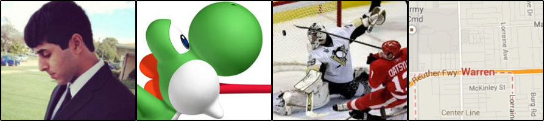

About Joe
Hey there, my name is Joe Dinkha, I am a junior at MSU going into Computer Science & Engineering. Quite surprisingly out of all the programming I've done, I've only worked with web design during high school and minor edits to my cultural club's MSU website. As a computer enthusiast and aspiring programmer, I prefer to use a coding IDE with a robust and convenient GUI. This includes software like Netbeans, Dreamweaver, and others of the like. However, I do want to get better and primarily go straight to source code when it comes to website creation. Thus, I have downloaded Notepad++ and tried to construct this website by hand as much as possible. It is not much but I am hopefully trying to get my web and software programming skills to complement each other.
Portfolio Photos
My Books
To be completely honest I do not read much, but I will be doing a lot this summer. It will be on coding standard and coding interview questions. I am trying to train myself to think more technical and have efficient methods of algorithms in my head. I do want to get into reading books that are based on my favorite movies and video games. This includes comic books, some of my favored ones being Nintendo game comics.
Contact
Contact me at JoeDinkha@Gmail.com or DinkhaJo@MSU.edu